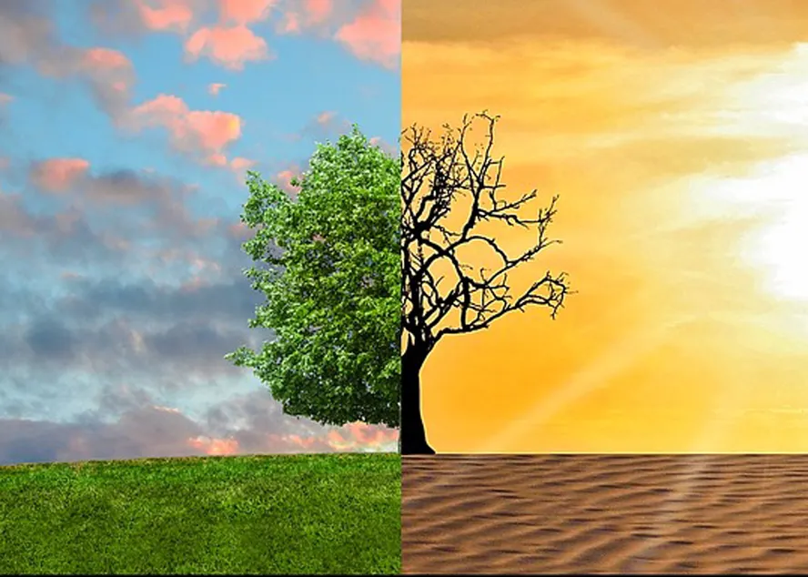

Entenda a Crise Climática
As mudanças climáticas, causadas principalmente pela emissão de gases de efeito estufa, já estão provocando eventos extremos como secas prolongadas, inundações e ondas de calor. O aquecimento global é uma ameaça real ao futuro do nosso planeta.
Como Resolver: O Caminho para a Sustentabilidade
1. Transição Energética
Investir em fontes de energia renovável como solar, eólica e hídrica, substituindo os combustíveis fósseis. Apoie e use energia limpa!
2. Economia Circular
Reduzir, Reutilizar e Reciclar. Mudar o modelo de produção linear para um onde os resíduos são reintroduzidos no ciclo, diminuindo a extração de recursos.
3. Reflorestamento
Plantar e proteger florestas e ecossistemas. As árvores são essenciais para absorver e manter o equilíbrio climático e hídrico.
4. Transporte Sustentável
Priorizar o transporte público, bicicletas e veículos elétricos. Reduzir o uso de carros particulares movidos a gasolina.
Aja Agora
A mudança começa com você. Adote hábitos mais sustentáveis e cobre atitudes de empresas e governos. Participe da Maratona Tech!
Conheça Mais Iniciativas